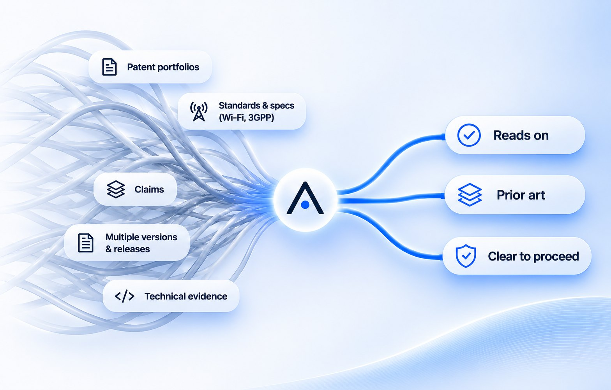
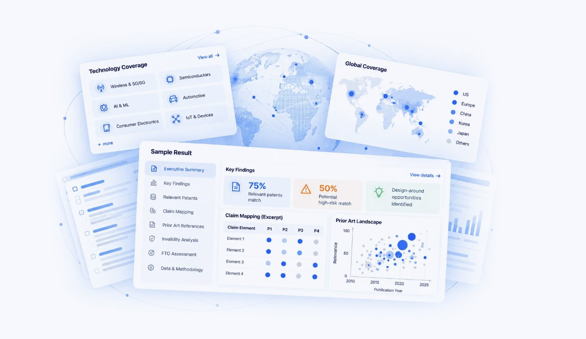
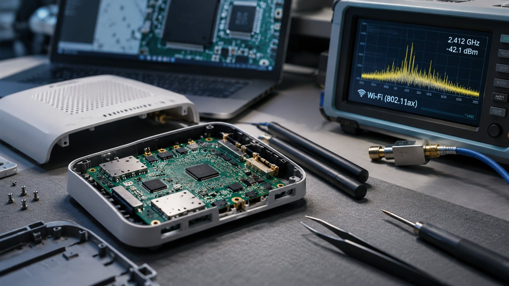
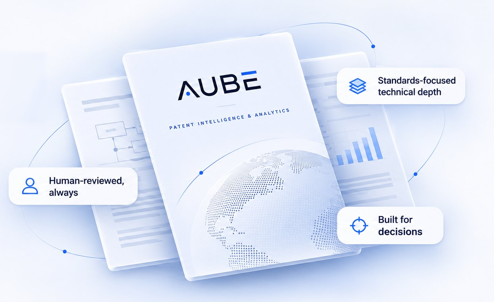
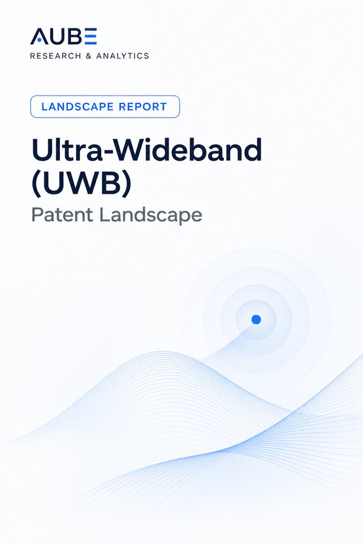

Latest publication
Vehicle-to-Grid (V2G) Patent Landscape
Comprehensive analysis of V2G technologies, key patent trends, leading players, and innovation hotspots shaping the future of energy ecosystems.

We turn complex patent and standards information into clear, evidence-backed insights, from claim charting and prior art to FTO and landscape analysis, with deep technical understanding and human review.
Search can be automated. Judgment isn’t.
Tools can surface thousands of documents in minutes. Deciding which ones matter, and whether they’ll survive scrutiny, still takes someone who reads the claims and the standard side by side. That’s the work we do.

Comprehensive analysis of V2G technologies, key patent trends, leading players, and innovation hotspots shaping the future of energy ecosystems.
Standards-essential work leads. Prior art, FTO and landscapes are scoped around the same specifications and the same review discipline.
Claims mapped element by element to the Wi-Fi (IEEE 802.11) or 3GPP specification text they read on, cited by release, version and section, with the evidence basis and a status stated for every element. Written for licensing, FRAND discussions and litigation.
How SEP work is scopedPatent and non-patent literature, including standards contributions and technical documentation, ranked by how directly each reference bears on the claims.
Read moreBlocking-patent identification and element-by-element claim reads before a launch, with design-around options where they exist.
Read moreFiling activity, technology clusters and whitespace across wireless and connectivity releases, built to change what you file next.
Read moreClaim charts and prior art with the documentation trail counsel needs, and support for expert consultation.
Read moreNovelty and non-obviousness read against the closest art before you draft or file.
Read moreProduct teardowns to see what’s inside, and hardware testing to show which standard features a device actually implements.
Read moreEngineering depth specific to each standard and technology, not generalist research applied broadly.
Licensors, brokers and funders price portfolios on evidence, not guesswork. Our essentiality and portfolio analysis gives you that evidence base, claim by claim.
Learn more802.11ax/be and earlier amendments: MAC and PHY procedures, multi-link operation and OFDMA.
LTE and 5G NR specifications across RAN and core, charted by release and version.
Wireless Power Consortium specifications: power transfer, communication and foreign-object detection.
Video coding standards such as HEVC (H.265): coding tools, syntax and decoding processes.
Compute, power electronics, embedded systems and firmware.
Battery chemistry, coatings and advanced materials.
Also covers: Biotech & life sciences University pre-filing work
Specifications say what a device may do. Teardowns and testing show what it actually does, and that’s the evidence a claim chart needs to hold up.

Retail units sourced and logged; packaging, labels and FCC IDs photographed before anything is opened.
Board-level imaging; SoCs, RF front-ends, memory and modules identified from markings and layout.
Firmware examined and the device tested on the bench and over the air, with Wi-Fi, 3GPP or Qi behaviour captured in logs.
Each photo, log and capture tied to the claim element it supports, with a method someone else can repeat.
Each chart is written to be read by counsel and tested by a counterparty, not just used by the analyst who built it.
[patent no.], claim [X] vs 3GPP TS [XX.XXX]
| Element | Claim language | Standard section | Status |
|---|---|---|---|
| [1pre] | Redacted | TS [XX.XXX]§ [X.X] | Reads on |
| [1(a)] | Redacted | TS [XX.XXX]§ [X.X.X] | Reads on |
| [1(b)] | Redacted | TS [XX.XXX]§ [X.X.X] | Partial |
| [1(c)] | Redacted | Under reviewsee note [N] | Open |
Standards-focused technical depth, reviewed by a person every time, and structured around the decision you actually have to make.

Every deliverable is checked and signed off by a technical reviewer. Internal tooling assists the work; it never replaces the review.
Wi-Fi and 3GPP specifications read as fluently as the claims, not generalist coverage applied broadly.
AI-assisted tooling speeds up internal triage and claim mapping. People make every call that reaches you.
Reports structured for the decision at hand: licensing, litigation, filing or investment, not generic summaries.
Litigation and licensing teams who need research that holds up when the other side tests it.
An independent technical read before capital is committed.
In-house teams managing SEP exposure, launches and portfolio decisions.
A practical read on timing standards-essentiality analysis against release milestones, and why charting too early costs rework later.
Read insightThe difference between a search that clears a launch and one that just looks complete on paper shows up in claim construction.
Read insightWhy landscape maps go stale faster in materials science than in software, and how we handle the update cadence.
Read insight
A structured analysis of UWB technology patents, key players, and filing trends across positioning, ranging, and secure-access applications.
View report (opens Gumroad)Comprehensive analysis of V2G technologies, key patent trends, leading players, and innovation hotspots shaping the future of energy ecosystems.
View report (opens Gumroad)No. Aube Research & Analytics is an independent patent research practice. We support law firms, licensing and litigation funders, and corporate IP teams with claim charts, prior art searches, FTO research and landscapes. Legal opinions and prosecution remain the responsibility of qualified patent attorneys.
As internal tooling only. AI-assisted tools speed up retrieval, document organisation and first-pass triage across large volumes of patent data. They don’t make calls. Every relevance judgement, mapping and conclusion in a deliverable is made and checked by a person who has read the claims and the source text. It isn’t a product we sell.
Every engagement is handled in strict confidence, and nothing is shared outside the scope of your project. Initial discussions can usually start with high-level information. If you need to share confidential detail, we’ll sign an NDA before you send it.
Pricing depends on scope, technical complexity, deliverables and timeline, and every project is quoted at a fixed fee after scoping. If you want to see the work before a larger engagement, start with a fixed-fee pilot: a single claim chart, a focused prior art search or a short portfolio review.
Both. Clients engage us for individual projects or for ongoing patent research support.
Most of our work is on Wi-Fi (IEEE 802.11) and 3GPP cellular standards (LTE, 5G NR). We also work on Qi wireless charging and media standards such as HEVC (H.265), and do hardware testing and product teardowns. Beyond standards, we take on semiconductors and embedded systems, energy storage and materials, and biotech where the scope fits, and we’ll say so at scoping if it doesn’t.
Yes. Every engagement includes the agreed deliverables and the supporting research findings. Reporting formats can be customised where feasible.
Yes. Reports can be tailored to your preferred structure, formatting and documentation requirements.
Thirty minutes to talk through the patents, the standard and the decision you need to make. You leave with a written scope, or a straight answer that this isn’t the right fit.
A small, fixed-scope first project so you can judge the quality before committing to more. It can be a single claim chart, a focused prior art search or a short portfolio review.